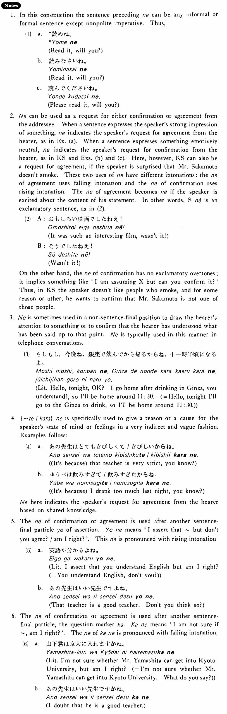

- (ks).
- 坂本さんは煙草を吸わない・吸いませんね。
- Mr. Sakamoto doesn't smoke, does he? / Mr. Sakamoto, you don't smoke, do you?
- (a).
- A:今日はいい天気ですね。 B:本当にそうですね。
- A: Today is a fine day, isn't it? B: Isn't it!
- (b).
- あなたは学生ですね。
- You are a student, aren't you?
- (c).
- パーティーにいらっしゃいますね。
- You are going to the party, aren't you?
